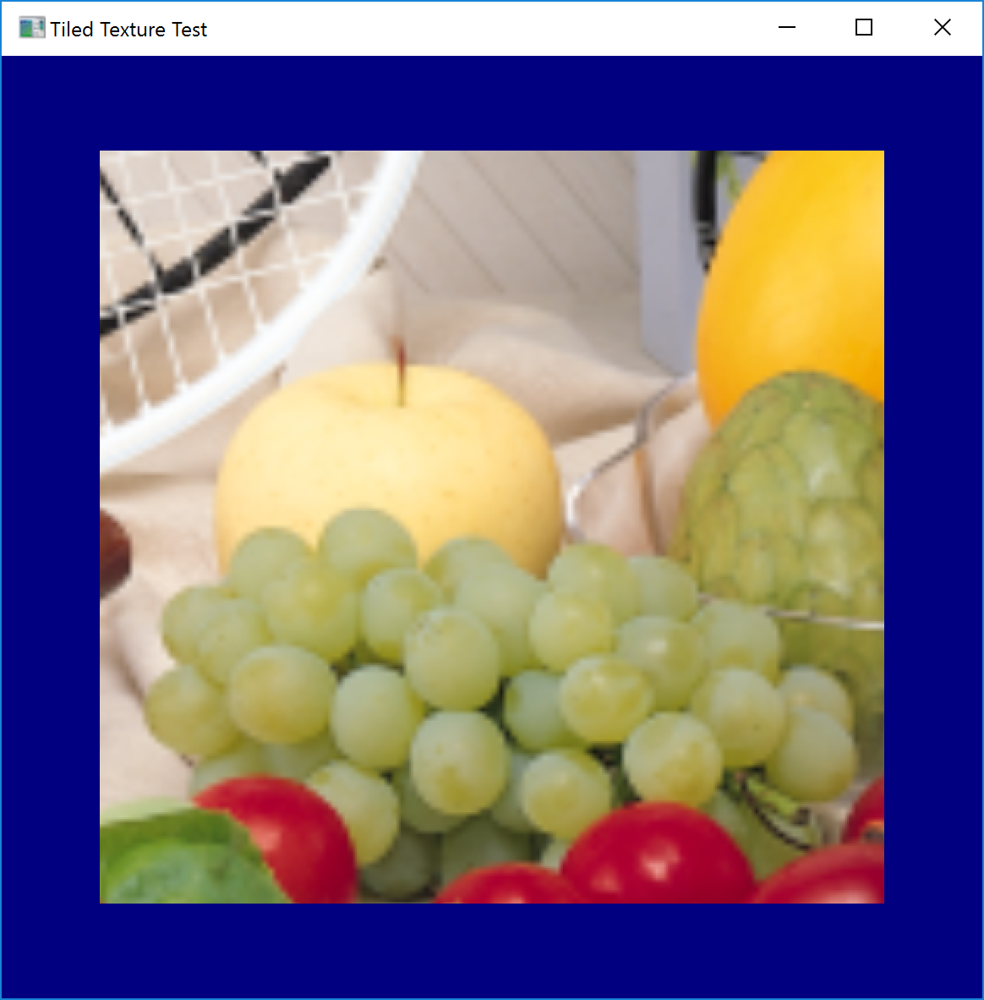
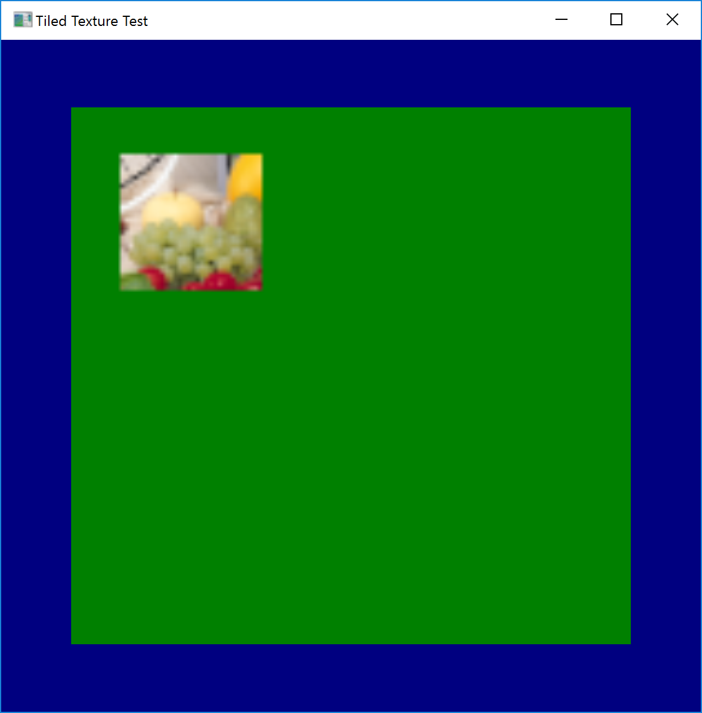

Compile the program and run it.
A left click into the window tests UpdateTiles
A right click into the window tests UpdateSubresouce
You can change the #define USE_WARP_DEVICE from 0 to 1 to use the WARP device
The images are generated by running the test program with the WARP device.
On the left I upload the test image to a whole tile via UpdateTiles
On the right I upload the test image into a subsection of the tile via UpdateSubresouce
 
When using UpdateTiles only one 16th of the texture is uploaded but that part is repeated, and even that part is randomly garbled. The exact visual results are random and differ between each call so I included two example images.
When using UpdateSubresouce the texture is transferred into the tile but everything outside the updated section is overwritten by repeating the uploaded segment. This only happens when the target of the call is a tiled texture, if I run the same call on a non-tiled texture it works as expected and preserves the texture content outside the updated section.